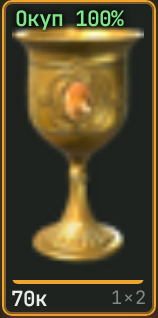
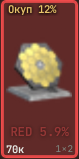
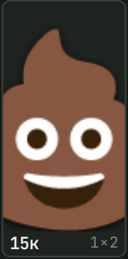
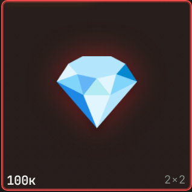
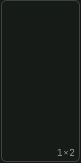

Что в грузе торговца, видно до покупки
ABI Merchant Unlimited слушает игру, читает размер и цену груза и показывает, какие предметы внутри, шансы на красное и окупаемость.
Chrome или Edge на ПК
Вход по ключу
Введите любой ключ — браузер его запомнит. Подойдёт даже одно слово.
Перед игрой
Чистый звук
Без эквалайзера, Sonar, Razer THX и фильтров NVIDIA (Alt+F3): они меняют звук, и груз не узнать.
Браузер
Chrome или Edge на ПК. В Firefox сайт не работает.
Как начать
- 01
Введите любой ключ
Подойдёт любая непустая строка: без регистрации, оплаты и пробного режима. Ключ браузер запомнит.
- 02
Выберите карту и режим
Те же, что и в вашем рейде: шансы считаются отдельно для каждой карты и режима. Сменили карту — выберите заново.
- 03
Включите демонстрацию со звуком
Нажмите «Слушать игру», выберите окно игры и включите звук. Дальше наводите курсор на груз и перетаскивайте.
Что значат значки

Выгодно
Полоса «Окуп NN%» — шанс остаться в плюсе минимум на 50 000.

Может быть красный
Плашка «RED NN%» — шанс на красный предмет. На выгодном грузе к ней добавляются иконка и полоса «Окуп».

Не выгодно
💩 — в среднем груз не отбивается: даже удачный исход не окупает ящик.

Точно красный
💎 — красный на 100 %. Вместо иконки алмаз и никакой полосы «Окуп»: берём не думая.

Звук не слышали
Пусто — груз ещё не перетаскивали. Перетащите, и появится вердикт.
Фиолетовые товары в список не попадают — но на шанс и окупаемость влияют.
Вопросы
Как с вами связаться?
Discord: _maks_2010._83479 — вопросы, баги и идеи. Пишите, отвечаю.
А это чит?
Нет — по методу. Программа не читает память и файлы игры и не лезет в её процесс: она получает ровно то, что видите и слышите вы, — картинку окна игры (как OBS) и звук (как Discord). Никакой скрытой информации, вроде чужих позиций или рюкзаков, она не даёт: только считает быстрее, чем вы в уме.
В официальном списке запрещённого софта Arena Breakout: Infinite — DMA-устройства, макросы и отладчики (Cheat Engine, x96dbg и подобное). Наш помощник — обычная вкладка браузера, ни под один пункт не подпадает. Отдельно разработчик не рекомендует софт захвата кадров (RenderDoc, Nsight): он перехватывает графику самой игры — это не наш случай.
Честно: античит ACE — ядровой, баны раздают жёстко (до 10 лет и по железу), поэтому стопроцентной гарантии не даст никто. В сводках банят за плагины, макросы и Eq-софт — случаев бана за помощники такого типа мы не нашли. Решение за вами.